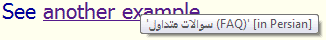
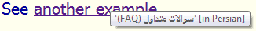

本文介绍了在用不了标记时，内容作者如何将方向元数据应用于双向文本。
代码示例中的从右到左文本用大写字母表示，从左到右文本用小写字母表示。
本文假设你熟悉双向文本的概念和使用HTML标记管理双向文本，但需要了解如何用Unicode控制字符做类似的事情，比如在编写纯文本时。如果你不熟悉Unicode中双向文本的工作原理，应该先阅读Unicode双向文本算法基础，再继续。
如果你不熟悉在HTML标记中管理双向文本，你也可以读一下HTML中的行内标记和双向文本。
本文涵盖和不涵盖的内容
你仍然需要用标记来为整个文档建立默认方向（比如在html标签中），以及为块容器元素更改方向。因为控制字符不会跨越段落等块元素的边界，也无法通过标记的层次结构管理继承和作用域，所以只适用于行内。
比如，虽然HTML页面头部的title元素不能包含标记，但仍然可以在title元素标签上设置默认基方向（或让它继承在html标签的方向）。本文描述了如何在行内或其他纯文本情况下更改方向，例如在title元素内部或title属性中，或如何为属性中的文本指定与周围元素不同的方向，等等。本文也适用于WebVTT和CSV等纯文本格式。
更改行内文本的方向
如果你想要更改一段行内文本的方向，你需要指示开始和结束点。为此，你需要用以下字符之一来指示方向更改的开始。
| 字符 |
名称 |
码位 |
等效标记 |
注释 |
| LRI |
LEFT-TO-RIGHT ISOLATE |
U+2066 |
dir="ltr" |
将方向设置为LTR（从左到右），并将嵌入内容与周围文本隔离 |
| RLI |
RIGHT-TO-LEFT ISOLATE |
U+2067 |
dir="rtl" |
同上，但用于RTL（从右到左） |
| FSI |
FIRST-STRONG ISOLATE |
U+2068 |
dir="auto" |
隔离内容，并根据第一个强类型方向字符设置方向 |
| LRE |
LEFT-TO-RIGHT EMBEDDING |
U+202A |
dir="ltr" |
将方向设置为LTR，但允许嵌入文本与周围内容交互，可能会有溢出效应 |
| RLE |
RIGHT-TO-LEFT EMBEDDING |
U+202B |
dir="rtl" |
同上，但用于RTL |
| LRO |
LEFT-TO-RIGHT OVERRIDE |
U+202D |
<bdo dir="ltr"> |
覆盖双向文本算法，按内存顺序显示字符，从左向右显示 |
| RLO |
RIGHT-TO-LEFT OVERRIDE |
U+202E |
<bdo dir="rtl"> |
同上，但从右向左显示 |
你需要用以下字符之一来结束这个范围：
| 字符 |
名称 |
码位 |
等效标记 |
注释 |
| PDI |
POP DIRECTIONAL ISOLATE |
U+2069 |
结束标签 |
用于RLI、LRI或FSI |
| PDF |
POP DIRECTIONAL FORMATTING |
U+202C |
结束标签 |
用于RLE或LRE |
| </bdo> |
用于RLO或LRO |
这些字符是不可见的，尽管在某些编辑器中可能会显示代表它们的符号。你也可以使用字符转义来表示它们，例如⁧，但在源代码中，你可能会发现转义中的字符不会保持在一起。（有关更多信息，请参阅RTL文字的源代码和代码示例。）
当你应用方向控制字符来指示文本方向的边界时，你会希望避免边界内的内容与边界外的内容交互，也就是进行隔离。在理想情况下，你会遵循Unicode标准的建议，使用RLI和LRI，并避免使用RLE和LRE。
以下示例展示了如何在纯文本中使用这些控制字符。它显示了HTML中的提示文字，其中包含链接到的文档的标题（包含缩写'FAQ'），以及指示目标页面的语言的文字。注意：文本'(FAQ)'如何出现在波斯语文本的右侧。这是不正确的，因为它是（从右到左的）文档标题的一部分。

正确的标题应该将文本'(FAQ)'放在波斯文本的左侧，如下所示。

为了实现正确的效果，我们添加了两个不可见的控制字符，U+2067 RIGHT-TO-LEFT ISOLATE（RLI）和U+2069 POP DIRECTIONAL ISOLATE（PDI），在下面的代码片段中表示为字符值引用。字符以"逻辑"顺序显示，而不是按照它们被渲染的顺序。
title="'⁧FREQUENTLY ASKED QUESTIONS (faq)⁩' [in persian]"
紧密包裹相反方向的短语
在某些情况下，双向文本算法可以很好地处理双向文本，而在其他情况下，它需要一些帮助。在HTML中的行内标记和双向文本中，我们提出了标记双向文本的最简单方法是在文本中每个方向更改的开始和结束处放置标记。这不会有任何负面影响，避免了遗漏需要的标记的情况，减轻了使内容作者的负担。你应该紧密包裹相关文本。
同样，在处理Unicode控制字符时，在文本中每个方向更改的开始和结束处放置方向控制字符是有意义的。
不过，重要的是要记住范围需要正确的嵌套。如果在RTL上下文中有一段嵌入的LTR文本，而在该LTR文本内部又有一些RTL文本，如果你的范围是并排的而不是嵌套的，就不会产生正确的结果。注意在以下的例子里，方向的变更是嵌入的，而不是并排的：
The title is ⁧AN INTRODUCTION TO ⁦C++⁩⁩ in Arabic.
浏览器中的结果：
The title is مدخل إلى C++ in Arabic.
处理溢出问题
溢出效应的一个经典例子：相反方向的短语的后面跟着一个逻辑上独立的数字。这是在相反方向文本周围使用RLE...PDF的代码：
We find the phrase '‫INTERNATIONALIZATION ACTIVITY‬' 5 times on the page.
浏览器中的结果：
We found the phrase "פעילות הבינאום" 5 times on the page.
正确的结果：
实际的结果：
这是因为双向文本算法告诉浏览器将"5"视为希伯来语文本的一部分，忽略了前面的文本处于不同的嵌入级别。这是不对的。我们需要找到一种方法来说明名称和数字是不同的，也就是把名称与数字隔离。
RLI/LRI控制字符通过将嵌入文本与跟随它的数字隔离来解决这个问题。你只需使用RLI...PDI而不是RLE...PDF。
We find the phrase '⁧INTERNATIONALIZATION ACTIVITY⁩' 5 times on the page.
浏览器中的结果：
We found the phrase "نشاط التدويل" 5 times on the page.
RLM和LRM
Unicode提供了另外两个与方向相关的不可见控制字符。
| 字符 |
名称 |
码位 |
等效标记 |
注释 |
| LRM |
LEFT-TO-RIGHT MARK |
U+200E |
无 |
强类型LTR字符 |
| RLM |
RIGHT-TO-LEFT MARK |
U+200F |
无 |
强类型RTL字符 |
它们的问题较少，因为它们是单独使用的，不像我们讨论的其他控制字符那样成对使用来分隔文本范围。但是，它们没有成对控制字符的功能。因为它们是强类型字符，所以它们扩展或打破了双向文本算法默认建立的范围。
在上面的示例中，我们需要告诉双向文本算法数字5是LTR文本的一部分。我们可以在它之前插入一个LRM字符：
We find the phrase 'INTERNATIONALIZATION ACTIVITY'‎ 5 times on the page.
浏览器中的结果：
We found the phrase "نشاط التدويل" 5 times on the page.
这是正确的结果。因为LRM是强LTR方向，它打破了数字与前面RTL文本之间的链接。
但是，这些单个字符无法做到的一件事是为嵌入的内联文本范围建立基方向，以便正确处理标点符号和嵌套方向更改。对于这些用例，你需要使用成对的字符。
其他相关问题
在本节中，我们说明了一些可以使用方向控制字符解决的其他溢出问题。
在第一个例子中，我们有一个相同方向的RTL文本列表，需要根据整体上下文（在这里是LTR）进行排列。
相同方向的文本片段之间的中性字符可能会被双向文本算法误解。在这个用例中，我们在LTR段落中列出了几个阿拉伯语的国家名称。这是一个相反方向短语后跟着另一个逻辑上独立的相反方向短语的示例。
我们希望看到以下内容：
如果不使用控制字符，实际结果是前两个阿拉伯单词被颠倒，中间的逗号被移动到单词之间空格的右侧。

失败的原因是，在两侧都有强类型RTL字符的情况下，双向文本算法将中性的逗号和空格视为阿拉伯语文本的一部分。它将前两个阿拉伯语单词以及逗号和空格解释为同一个阿拉伯语的单向文本片段。实际上，逗号和空格是英文的一部分，我们应该标记阿拉伯语中两个独立的从右到左的单向文本片段之间的边界。
这个用例的解决方案是通过用成对的RLI/PDI代码包裹每个列表项，或者通过插入强LTR类型的LRM字符来分离列表的前两项。
The names of these states in Arabic are ⁧EGYPT⁩, ⁧BAHRAIN⁩ and ⁧KUWAIT⁩ respectively.
The names of these states in Arabic are EGYPT‎, BAHRAIN and KUWAIT respectively.
浏览器中的结果：
The names of these states in Arabic are مصر, البحرين and الكويت respectively.
The names of these states in Arabic are مصر, البحرين and الكويت respectively.
标点符号
标点符号或其他中性字符出现在相反方向短语的末尾并属于该短语的一部分是非常常见的。
不幸的是，除非给双向文本算法额外的帮助，不同的单向文本片段之间的这种中性字符一般都会被误解。在以下的例子中，感叹号是阿拉伯语文本的一部分，因此应该出现在其左侧：
如果我们只是依赖双向文本算法，我们会看到：
了解双向文本算法后，我们可以很容易地理解为什么会发生这种情况。因为感叹号是在最后一个RTL字母'ب'（在左侧）和LTR字母'i'（单词'in'的）之间输入的，其方向性由段落的基方向决定，在这种情况下是LTR。因为感叹号被视为LTR，它加入了包含文本'in Arabic'的单向文本片段。
有两种方式可以轻松解决这个问题。我们可以简单地在感叹号后添加RLM/LRM字符。你需要选择与前面的短语具有相同方向性的字符，从而扩展单向文本片段的长度，以包含标点符号。
The title is "INTERNATIONALIZATION ACTIVITY!‏" in Arabic.
浏览器中的结果：
The title is "نشاط التدويل!" in Arabic.
或者，你可以将相反方向的短语包装在成对的控制字符中，在这种情况下是RLI后跟PDI。
the title is "⁧INTERNATIONALIZATION ACTIVITY!⁩" in Arabic.
浏览器中的结果：
The title is "نشاط التدويل!" in Arabic.